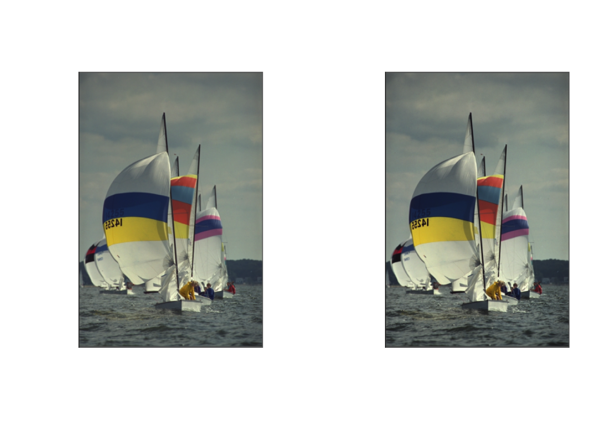
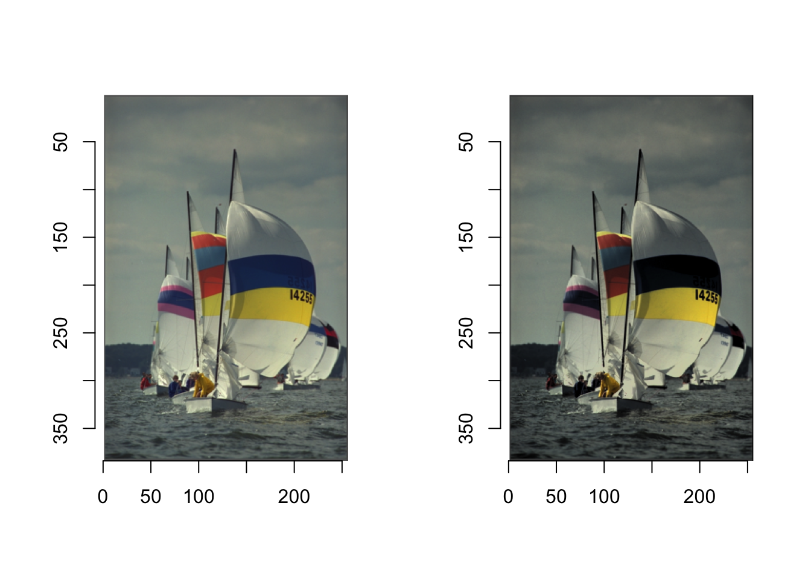

Transformacje obrazów, które odbywają się na poziomie pojedynczych pikseli nazywane są w literaturze tematu transformacjami punktowymi (ang. point transformation). Należą do nich między innymi:
modyfikacja kontrastu,
modyfikacja jasności,
zmiana intensywności,
odwracanie wartości piksela,
kwantyzacja obrazów (ang. posterizing),
progowanie,
korekta gammy,
transformacje kolorów.
Wszystkie można opisać formułą
\[
g(x) = h(f(x)),
\]
gdzie \(x = (i,j)\) jest położeniem transformowanego piksela, \(f\) jest funkcja oryginalnego obrazu (przed przekształceniem)1, natomiast \(h\) jest zastosowaną transformacją. Wówczas \(g\) opisuje transformację jako funkcję lokalizacji.
1 informuje o nasyceniu barw w danej lokalizacji - pikselu
Na potrzeby zmian w kontraście, czy jasności stosuje się przekształcenia postaci:
\[
g(x) = a(x)\cdot f(x)+b(x),
\]
gdzie \(a(x)\) jest parametrem zmiany kontrastu, a \(b(x)\) jest parametrem zmiany jasności2. Należy jednak pamiętać, że wartości \(g(x)\) tak określonej transformacji mogą znaleźć się poza przedziałem [0,255]. Oczywiście powoduje to problem, z którym można sobie radzić poprzez progowanie wartości, tak aby znalazły się w przedziale [0,255]. Obrazy zapisane w formacie cimg wartości poszczególnych kanałów mają znormalizowane do przedziału [0,1]. Dodatkowo należy pamiętać, że funkcja plot ma domyślnie włączoną flagę rescale=TRUE co oznacza, że wartości kanałów zostaną znormalizowane do przedziału [0,1] automatycznie. W rezultacie oznacza to, że transformacja liniowa \(g(x)\) nie odniesie żadnego skutku.
2 jeśli zmieniamy te parametry globalnie (dla całego obrazu) wówczas funkcje te są stałe
Kod
library(imager)library(imagerExtra)library(tidyverse)adjust <-function(x, contrast, brithness){# transformacji dokonujemy od razu na wszystkich kanałach x_trans <- x |>as.data.frame() |>mutate(value =ifelse(value*(contrast+1)+brithness>1, 1, ifelse(value*(contrast+1)+brithness<0, 0, value*(contrast+1)+brithness)), .by = cc) |>as.cimg(dims =dim(x))return(x_trans)}layout(t(1:2))plot(boats, rescale = F, interpolate = F)adjust(boats, 0.7, 0) |>plot(rescale = F, interpolate = F)

Rysunek 5.1: Zmiana kontrastu obrazu (podbicie o 70%)
Rysunek 5.4: Zmiana jasności obrazu (redukcja o 40% pełnej skali)
Aby uniknąć przekraczania wartości dla poszczególnych kanałów wprowadza się często funkcję, która podnosi kontrast (tzw. autokontrast) przez poszerzenie spektrum wartości z obserwowanych \([x_{\min},x_{\max}]\) do przedziału \([lower, upper]\) (często przyjmowane jako [0,1]):
\[
g(x) = x_{lower}+(x-x_{\min})\cdot\frac{x_{\max}-x_{\min}}{x_{upper}-x_{lower}}.
\] Funkcja EqualizeDP pozwala na autokontrast. Dodatkowo umożliwia ustawić wartości skrajne dla spektrum kanału inne niż min i max.
Rysunek 5.11: Transformacja kolorów niezależnie modyfikując każdy kanał
Aby wykonać transformację drugą metodą zapiszemy plik w skali szarości, czyli dokonamy faktycznie agregacji postaci:
\[
g_{grayscale}(x)=0.3R+0.59G+0.11B.
\]
Ponadto będziemy potrzebowali intensywności barw. Do zapisu nasycenia barw użyjemy funkcji GetHue pakietu imagerExtra.
Kod
# zapisujemy obraz w skali szarościg <-grayscale(boats)# zapisujemy nasycenia barwhueim <-GetHue(boats)# transformujemy obraz w skali szarościg <-BalanceSimplest(g, 2, 2, range =c(0,1))# oddtwarzamy koloryy <-RestoreHue(g, hueim)layout(t(1:2))plot(boats)plot(y)

Rysunek 5.12: Transformacja kolorów modyfikując kanały łącznie